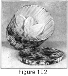

1930—Millinery Processes
by Carlotta M. Brown
RENOVATION AND CARE OF HATS AND HAT MATERIALS
RENOVATING HATS
The "left-over" hat is one of the problems to which every woman should give careful consideration, if for no other reason than the conservation of the materials. It is a very unusual hat indeed that requires no changes whatever if it is to be utilized a second year. In spite of our ever-changing styles there is usually some way of making an old hat more up-to-date in appearance. Generally the first step in any renovation process is the cleansing of the hat and its trimmings.
Cleaning and Bleaching Straw and Braid Hats
White and light-colored hats. All straw and braid hats should be cleaned frequently to keep them in good condition. One very simple process for removing dust and dirt from all light-colored hats is to rub them thoroughly with fresh rye bread. An end cut from the loaf makes a convenient piece to handle. This method of cleaning takes only a few moments and may be used without removing the trimmings from the hat.
Leghorns, milans, panamas, and chips and all fiber braids may be cleaned effectively with corn meal and any noninflammable cleaning fluid. The corn meal (¾ of a cup or more, according to the amount of cleaning to be done) should be placed in a small vessel and dampened with the cleaner. The moist corn meal is thrown over the surface of the hat and rubbed in briskly with a brush or a light cloth. Care must be taken to go over every portion of the hat, for this insures even cleaning. After the liquid cleaner has evaporated, brush the corn meal from the braid thoroughly. The odor is dissipated more quickly by heat than by cold; so if the hat is put in a warm place the odor will soon disappear.
Leghorn and panama hats may also be washed with tepid soapsuds made from a good white soap or soap flakes. Before washing, the hat crown should be stuffed tightly with white tissue paper; it is also a wise precaution to run a wire around the head size to keep it from shrinking. Or the crown may be slipped over an old fabric crown or a block, which will help to keep it in place. In order to hold the brim in place during the washing, it may be pinned to a soft-wood board or ironing board, using common steel pins or thumb tacks. After washing, the hat surface should be well rinsed to remove all the soap. This is done by wetting a cloth in clear water and wiping the braid carefully several times. Then, with a dry cloth, wipe as much of the moisture from the straw as possible.
All straw braids may be pressed, and a hat that has been washed will need pressing. However, if the hat is to be bleached also, the pressing should not be done until after the bleaching.
If, after careful cleaning, sunburned spots are found, the hat may be bleached. Many commercial bleaching powders and crystals are on the market. Care should be taken, however, not to use a bleach that is too strong or the acid may injure the straw. After applying the bleaching liquid, rinse thoroughly as described for cleaning.
A homemade bleach may be made from lemon juice and sulphur, using the juice of 2 lemons and 2 tablespoonfuls of sulphur. Dampen the sulphur with the lemon juice and rub into the hat. Or dip a cut lemon into the sulphur and rub over the hat surface, redipping the lemon as the sulphur becomes absorbed.
Pressing is done by fitting the crown over a crown block, a small bowl or stewpan, a hard pad of cloth, or anything which will fill the crown and give a firm surface. Always place a dry cloth between the hat surface and the iron to insure against browning or scorching the braid. A flat brim may be pressed on a flat surface, but a curved or rolled brim must be pressed over a hard cloth pad made to fit the curve. The iron must be kept in constant motion during the pressing, for if it is permitted to rest on any one spot, its impression will be left.
Black and dark-colored hats. There are many methods for cleaning black straw hats. The simplest of these is to rub the hat very briskly with a piece of black or dark velvet. Another simple but remarkably good method is to rub the hat with a dark cloth dampened in a solution of ¾ pure alcohol and ¼ water. This brings to the straw a revived newness and brightness. Vaseline, glycerin, or olive oil on a flannel cloth may be rubbed lightly over the hat, and followed by a coat of clear shellac to give stiffness and luster. This shellac comes already mixed and is easily applied with a paintbrush. Instead of shellac, gum arabic may be used when the hat is in need of but slight stiffening. Dissolve 2 tablespoonfuls of gum arabic in a cup of boiling water, cool, and apply to the hat with a soft cloth or brush. This gives a natural stiffness not only to straws and other braids but also to laces and wash fabrics that have lost their crispness.
After the bleaching or cleaning process, some braids seem to have lost their original luster. This may be brought back by rubbing them well with a piece of cloth or velvet. Proceed as in polishing any other household article. This method is most effective on braids of extremely smooth surface, such as bangkoks, bali-buntal, peanit braids, and the like.
Felt Hats
Felts need cleaning more often than straws, for they are of different texture; coming in contact, as they do, with the fur collars of coats and the oil from the hair, they need almost constant attention. It is best not to let them become too soiled before cleaning.
When they are only slightly soiled, it is sometimes sufficient to sponge them with a weak solution of ammonia water. For smooth-napped felts the use of an ordinary ten-cent rubber sponge is effective. It acts as an eraser, does not harm the felt, and amply repays the slight effort involved.
If the entire hat is too badly soiled to be cleaned by these simple solutions, much the safest way is to send it, trimmings and all, to some cleansing establishment, where it will be thoroughly cleansed for a small cost.
There are many noninflammable commercial cleaners, both liquid and paste, which may be safely used to clean both the hat and its trimmings. If the hat needs pressing after it is cleaned, use the method described for pressing straw braids. If the nap of the felt is flattened by the pressing, rub it with a piece of fine sandpaper or a very stiff brush until the original condition is restored.
Dyeing Hats
There are two processes for dyeing hats: they may be immersed in a dye bath or they may be painted with a commercial dye.
Hats of soft, pliable straw braid, and all artificial silk, or hemp braid, may be placed in a warm dye bath, using cotton dye. Dissolve the dye and bring it to the boiling point; remove it from the stove, and immerse the hat. Let it stand in the dye until it is thoroughly soaked; then let it dry over a commercial or homemade crown block. If a slight stiffness is needed, the gum-arabic solution recommended for straw hats may be used. When dry, press as was done after cleaning. All strip braids, including horsehair, may be put in a dye bath; felts also may be dyed in this way if care is taken to dry them on blocks. Strip braids should be laid on a rough surface; and pressed on the wrong side.
It is unwise to attempt to dye a hat its original color, for it is very difficult to match the color exactly. Choose instead a slightly deeper tone which will cover any spots or faded places. All commercial dyes are concentrated and must be diluted to get the tint or shade desired. For tints use only a small quantity of dye. For deeper tones use more dye, but add only a small quantity at a time until the shade is right. Keep in mind that the color always will be slightly lighter when dry.
Ready-to-use commercial dyes that are painted on the hat with a brush may be used for straw hats instead of the dye bath. These must be handled carefully if the hat is not to be made stiffer than is attractive. To go over the hat many times with a small quantity of dye is much better than to use more dye and cover the hat but once. If the brush is too heavily loaded with dye, it will leave spots. These dyes usually come in both luster and dull finish.
Common tube oil paints may be used most successfully for dyeing straw braids. By mixing carefully, any costume may be matched. The paint is thinned to the consistency that will enable it to be spread smoothly over the braid surface. If one of the noninflammable liquid cleaners is used for thinning, very little of the disagreeable odor will be left on the finished product.
RENOVATING HAT MATERIALS
Flowers
Before a worn or faded flower is thrown away, it is always best to go over it carefully to see if at least a part of it may not be used again. Sometimes a lovely bit of color is found in the center, which may be combined attractively with a fresher flower. Many methods are used in the renovation of flowers. Water colors, batik dye, cold-water dyes of all kinds, oil paints, crayons, and rouge may all be used.
When oil paint is used, it should be mixed with some noninflammable liquid cleaner. The whole flower may be dipped into this, or the mixture may be applied with a brush. Lovely tints or combinations are obtained in this way. All frayed edges should be trimmed carefully and the petals pressed with a medium-hot iron. To add crispness the back of the petal may be brushed lightly with a solution of gum arabic or of sugar and water, or with the nonstaining millinery glue.
Crayons and rouge should be rubbed over the flower surface until the desired shade is obtained. The oil crayons may be made fast color by pressing with a hot iron. When flower crowns are in vogue, they always give opportunity for using renovated flowers. The color of these flowers may be restored by dipping or painting, and they may then be mixed successfully with fresh flowers. This lessens the expense of the hat. Renovated flowers are improved by a thin covering of malines or tulle.
Foliage
Foliage may be renovated by painting each leaf with melted paraffin and pressing with a warm iron. The heat spreads the paraffin, and only a slight coating remains to give freshness. Trim the edges of the leaf; if the little wires at the back are loose, paste them back into place with glue. If the foliage is made of velvet instead of cambric, it may be steamed and cleaned, or, if necessary, it may be given a dye bath and then steamed. It is always best to clean flowers and foliage before putting them in the dye bath. Velvet leaves may be stiffened by painting the back with millinery glue or a gum-arabic solution. Leaves made of cambric may be made extra shiny by a coating of shellac.
Laces
Gold and silver lace may be brightened by cleaning in alcohol.
White silk lace may be soaked in a solution of borax and water, one tablespoon of borax to one quart of warm water. Let it stand about twenty-four hours. Then, if the lace is wide, pin it on an ironing board, so that the design will not be lost. When almost dry remove the pins and press lightly on the wrong side over a rough cloth. If the lace is narrow, wind it around a bottle or fruit jar; let it dry, and press in the same way. Or lace may be washed in tepid water in which soap or soap flakes have been dissolved. Baste it on a strip of muslin and wash by squeezing between the fingers. Do not rub. Rinse well, let dry partly, and press as before.
Black lace may be cleaned and stiffened at the same time by dipping into a solution of ¾ alcohol and ¼ water. Stretch and pin on an ironing board. When dry, the lace will look bright and clean and its original stiffness will be restored.
Ribbons
Ribbons are not easily cleaned at home unless they are of the satin or taffeta that is made for washing. It is much better to send them to the dry-cleaner's. For washable ribbons use suds made of white soap and tepid water. Then wind the ribbon around a bottle; when almost dry, remove from the bottle and press between cloth or paper. Ribbon may also be dried by placing it flat on a cloth and then rolling cloth and ribbon so that the cloth will absorb most of the moisture. When the ribbon is partly dry, press it as directed above.
Velvets
Velvets are too expensive to be tossed aside, for they respond satisfactorily to renovation if a little time and patience are devoted to them. First remove all threads and dust with a soft-bristle brush. A tin iron rest, used for keeping the iron upright when materials are being steamed, may be purchased, or it may be made by any tinner, for its construction is very simple. Cut a strip of heavy tin 6 inches wide and 28 inches long, soldering the ends to form a circle. Flatten the circle to form a top and a base 8 inches in length. The depth of the holder will then be 6 inches at either end. Through the center of one flattened surface cut a slash wide enough to admit an iron handle. An electric iron is to be preferred, since it does not require reheating and is more easily regulated, but the old-fashioned flatiron will serve the purpose well. Over the hot iron spread three thicknesses of cotton cloth which has been dipped in water and well wrung out. Over the wet cloth put one thickness of dry cloth. This serves to protect the velvet from the wet surface. Draw the velvet right side up over the steaming iron and cloth, brushing constantly with a soft-bristle brush while doing so and being careful always to brush in the direction of the nap, never against it. Take great care in the first brushing not to press down so hard that the velvet is dampened by the cloth beneath. After skill is acquired the velvet may be drawn very quickly and easily over the surface.
If a tin iron rest is not available, place two bricks or any other firm support about two inches apart; on them rest a heated iron, handle down; or the iron may be turned on its side and used in that position.
Most old velvets must be mirrored, which is the milliner's term for ironing velvet. Steam the velvet and place on the ironing board, with the nap, or pile, down. Be very sure that the nap of the velvet runs with the stroke of the iron, not against it. Run the iron very lightly over the back of the velvet, beginning at the left of the strip and taking long light strokes. Be exceedingly careful never to allow the outer edge of the iron to touch the velvet, or streaking will result. After the iron has been sent across the full width of the board, return to the starting point and go across again, always overlapping the first strip a trifle to avoid the same possibility of streaking. Next turn the velvet to the right and repeat the process. Unless the velvet has been abused in the wearing, its freshness may be restored many times under this treatment.
Plush
Plush may be steamed in the same manner, but because of its heavy nap it must never be ironed.
CARE OF THE HAT
Like all other parts of the clothing, hats look better and last longer if well cared for. Frequent brushing and cleaning keeps them free from dust, and care in putting them away preserves the shape.
One of the simplest and best ways of keeping the hat in good condition is by the use of the hat box. If the hat is placed inside a box, it will be kept free from dust and the shape will be more easily retained. Decorative hat boxes add an attractive note to the clothes closet; where closet space is not available they may be placed on open shelves, tables, or other pieces of furniture, or even piled in an empty corner of the room. There they serve the double purpose of adding storage space and decoration.
These hat boxes are easily made by decorating the plain hat boxes used for shipping men's hats. They come in two sizes, and usually can be obtained in any men's furnishing store at very small cost. They may be covered with wall paper to harmonize with the color scheme of the bedroom. About 1 ½ or 2 yards of wall paper will be needed to cover the large-sized box.
Making the Hat Box
Select an attractive wall paper of good design and coloring. As the finished box is to be shellacked, it will be wise to try shellac upon samples of the paper; for although it leaves a shining surface, shellac has a peculiarly dulling effect on some colors.
Before cutting the side covering, plan it so that the design will match at the joining point; then cut it the depth of the side of the box plus ¾ of an inch at the top for the edge turning and ¾ of an inch at the bottom for turning under the box. Paste the paper to the side of the box; turn the top edge allowance and paste to the inside of the box. Slash the bottom allowance into small tabs ¾ of an inch deep, and arrange them so they may overlap each other slightly and be pasted perfectly flat to the bottom of the box. For the lid covering, place the lid upside down on the wrong side of the paper and run a pencil marking around the outer edge. Cut about ½ of an inch beyond the pencil marking to allow for turning. Paste the paper to the top of the lid, and again cut the turning allowance into small tabs and paste to the side of the lid. Next cut a strip of paper as wide as the narrow band, or side, of the lid plus a turning allowance of half an inch for the finish at the bottom of the band. Place the paper even, or flush, with the top edge of the band, and paste, making the seam joinings of the side of lid and the side of box in a direct line with each other.
Both box and lid are then lined with crêpe paper. Choose one of the prominent colors of the design for the lining; for when the lid is removed, the inside of the box should be in perfect harmony with the outside. The crepe paper may be pasted flat by cutting the side strip the depth of the box, with a turning at the bottom only. The paper is then placed flush with the top of the box and pasted. An oval piece is cut the exact size of the bottom and pasted in place. A softer effect may be obtained if the paper is cut several inches longer than the circumference of the box, to allow for fullness, and only a small area pasted at a time. Before the paste has had a chance to dry, press the fingers against the paper and push it forward, making a fullness or small plaits. Lap the paper flat when joining. The bottom finish is the same as that described above.
The finishing of the inside of the lid is done in the same way as the outside except that no turning allowance is needed as the paper is trimmed even with the edge of the lid. Special care should be taken to have the pasting of this band smooth and firm, so that it will not be loosened when the lid is slipped off and on the box.
For a hat rest at the bottom of the box a large rose of crepe paper may be made. This may have single petals or petals partly cut from one long strip. The larger petals are oblongs from 5 to 6 inches in width; the smaller ones, from 3 to 4 inches in width. Their length is determined by the size of the box; the first layer should extend from the exact center almost to the edge of the box. When the petals are cut singly, take a very heavy knitting needle, a small round curtain rod, or even a smooth lead pencil for the base upon which to roll. Place this base at the upper right-hand point of the oblong strip of paper and roll until slightly more than half the length of the petal has been turned and until the center point in the width has been reached. Then, holding the tip of the roll in the left hand, push the paper up as tightly as possible along the solid foundation toward the tip. This completes one half of the petal. Repeat the process for the other half. The two halves will terminate in a point. Lay the base of each petal in folds and fasten before the petals are joined together. Place the finger tips on the inside of the petal near its base and spread slightly to form a petal with a greater curve. These are joined together before the next row of slightly smaller petals is placed.
If the petals are to be made from one long strip, determine the depth and length, and slash at intervals of every 5 or 6 inches to about three fourths the depth of the strip. For curling or rolling proceed as for the single petal. Fold in the base of the strip and fasten. Each rose should have at least two layers of petals, the center group slightly smaller than those forming the first layer.
Make a center finish by rolling a piece of paper to represent a small rose center, and attach it to the petals. Sew the rose to the center of the box by thrusting the needle through the rose and the bottom of the box from the inside and back again, tying the thread in a double knot on the inside. It may be necessary to repeat this process in order to hold the rose firmly in place. The threads, of course, must be concealed beneath the petals.
The box is now turned upside down and the bottom is finished by a covering of wall paper, the circle being trimmed flush with the edge. After the box is all complete and the paste is thoroughly dry, give the entire outside two coats of shellac. This will preserve the paper and give the box an attractive gloss. It will also make it possible to remove all dust or spots from the surface by wiping it over with a damp cloth.